OLD NICKS Vs LAS VEGAS
2001
|
2001 TOURNAMENT ROSTER
|
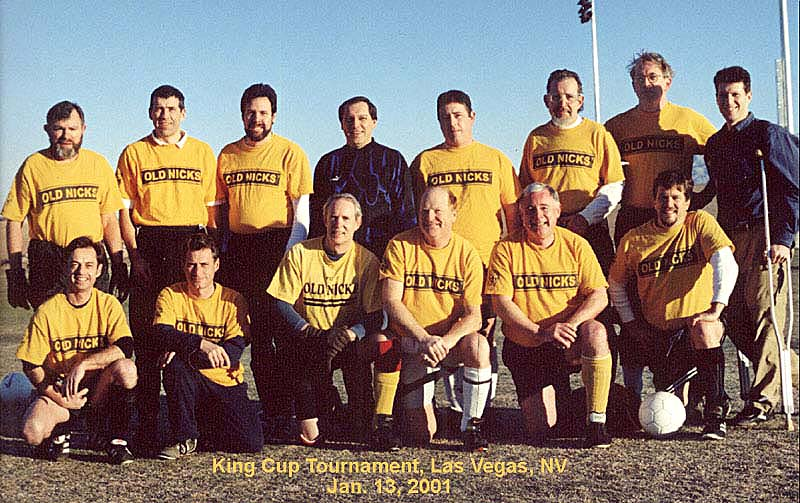 |
|
THE 2001
KING CUP TOURNAMENT - Over 40 bracket, Recreational Level (yeah, sure!)
|
| We should have known when
we saw the sign warning us that the soccer fields were flooded during rainstorms
that we were out of our depth. However, under the enthusisatic urging of
Rob, a baker's dozen of players accompanied by Glenn on his crutches as
Technomeister , and an assortment of friends and significant others, landed
in Las Vegas at various times of day and night on Friday, January 10, with
the goal of playing a little soccer and enjoying Glitter City. |
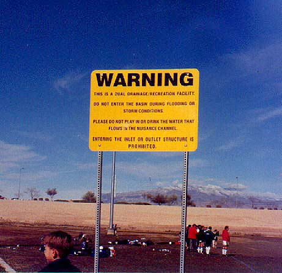 |
| At the airport, we actually lost Al for awhile, but we struggled on to our hotels, checked in, and began to wander the Strip in aimless groups. I knew I was truly in Vegas at the airport shuttle area where there was a 6'4", 300 lb driver with an Elvis haircut. The first game was ten miles north of town at the Buckskin athletic complex. Kickoff was at 7:30am. The sky was clear and there was a nice frosting of ice on the fields. Our first match was against Duke of Edinburgh, a team from the Bay Area which included, at our best count, at least three former NASL players including Chris Dangerfield who'd done a stint as a Portland Timber in 75-76. They were a gentlemanly group and demonstrated dozens of different ball skills and passing interactions which we had not seen that close up before. John Ripley, a player cajoled by Rob into joining us actually did get a couple of shots at the goal. We were heartened. Scoring a goal, we decided was our challenge for the trip. | 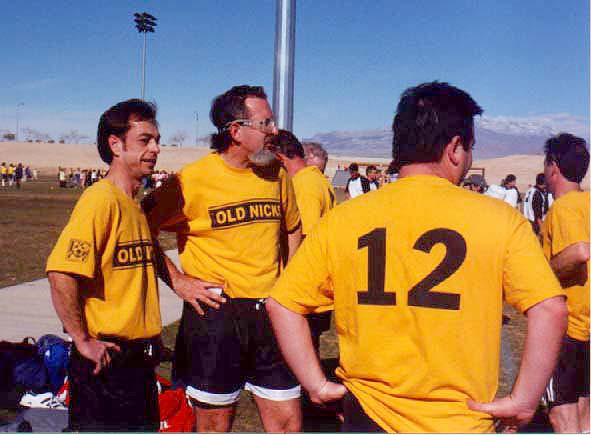 |
|
The second match began just before noon against a team named, Ihor's Boys. I didn't ask the origins of the name. They apparently didn't have NASL players as their core, but they were younger and faster than we were. They demonstrated pinpoint shooting from twenty to twenty-five yards out. Several times over. They were also polite. Their manager told us they wouldn't have kept scoring so many goals except that goal difference could be the final decider of who won the tournament. I thought that was nice of him. By this time the ice had melted and it was actually warm. Our small crew of 'fans' on the sidelines were getting sunburned. Following the game, the whole team headed back to hotels with the intent of getting into hot tubs or similar facilities. With a few hours of rest under our belts, we thought we could manage to get together for dinner. |
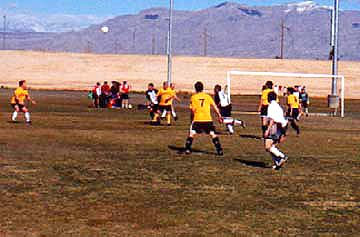 |
| Glenn was a real help on the sidelines. Since we only had two subs, he shouted encouragement and gave us pointers on what he saw happening on the field. I think several team members wished they had crutches so they could join him. | 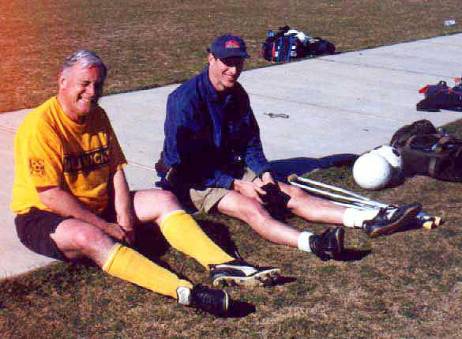 |
| The late afternoon found many of us wandering the streets of Vegas gawking at the sights. I can't vouch for the rest of the crew, but Jim, Glenn, Mary, and I settled in the Battle Bar at Treasure Island to watch the pirates sink the British ship. Glenn's only letdown was that they didn't have his favorite "Pittock" beer, and he had to settle for a Samuel Adams. It was a great place to hole up until it was time to eat. | 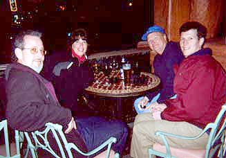 |
|
Dinner, for most of us,
was the buffet at the Bellagio. After slipping eight or ten players into
the long line, we managed to get a table and began sampling the vast range
of food available. I wouldn't say it was a training table by any means,
but everyone ate hearty. Crab legs, sushimi, curried calamari, roast venison.
You name it and they had some. The hit of the evening was a prickly red
fruit the identity of which we debated at some length.
|
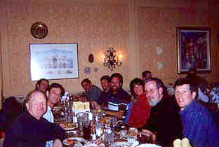 |
| Rob, under the impression that its skin had aphrodisiac and healing qualities, applied the fruit to his most injured part- afflicted during some exchange the previous night while in a bar. | 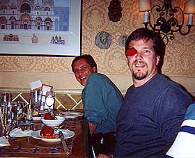 |
|
John Mayfield, on the other
hand, had his nose out of joint over the day's defensive efforts and tried
this natural form of healing. We left the Bellagio cheerful and chanting-
'let's just score a goal'.
|
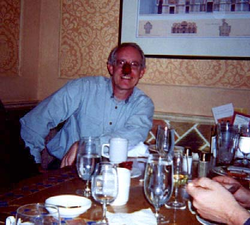 |
|
There followed a jaunt
through the brightly lit Las Vegas night. Rob and Rock insisted on accosting
women in the Paris Casino. We watched the beautiful water and light display
accompanied by opera at the Bellagio first and then sauntered under the
faux Parisian sky hoping dinner would digest before dawn.
|
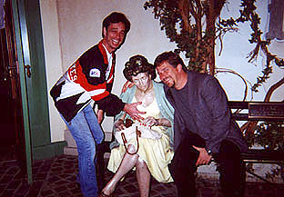 |
| The majority of us were staying at the Flamingo and actually found our way back there before midnight. One anomaly of Las Vegas was that the streets were lined by groups of men and women who appeared to be recent immigrants from Central America who had been hired to hand out tiny pornographic solicitations- holding them out with a snap to passersby. It was both wierd and sad. | 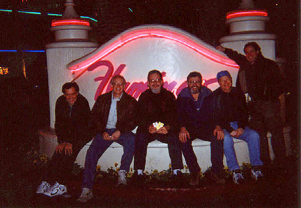 |
| Day Two began like day one with a game at 7:30 am on the icy fields. Our opponent this time was a team called Woodland Hills. We discovered, however, that we were down to only twelve players. Ripley, one of our stand-ins, was missing and later turned out to have gotten ill. Fortified from the previous day's experience, we started the game and actually played the ball immediately into their danger zone- surprising ourselves and them. After that, though, the familiar pattern reasserted itself as they displayed superior skills and speed. We worked hard, though, and did not give up as many goals as we had in the previous games. And we did have more shots at their goal. | 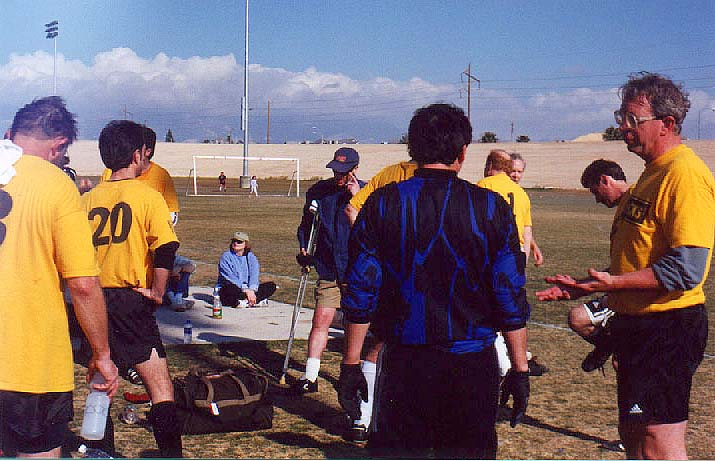 |
| The second game of the day was against Central Valley Sports, a team name not likely to strike fear iinto anyone's heart. However, we had lost yet another player- Jeff Welsh broke his toe. Despite the lack of subs, we played the game with heart. And again came close to scoring against a team that was still out of our league. But by the end of the match, we were both exhausted and glad to have survived the experience. The consensus was that it was a good experience and that we should come back next year and play in the Over 48 Recreation Division, or maybe use fake ID and look for an Over 55 group. | 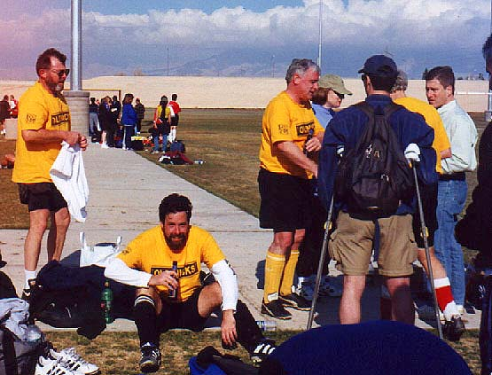 |
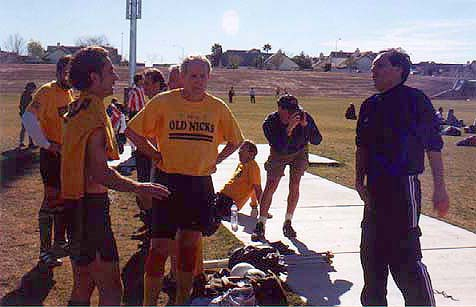 |
|
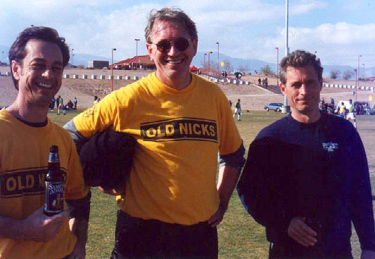 |
|
Post game activities that night were diverse.
We joined Steve Pinger and his family, and Matt Goodrich, at the Mexican
restaurant "Taqueria Canonita" in the Venice Casino right next
to the gondoliers singing arias from unknown operas and maneuvering down
the heavily chlorinated 'canal'. Is this the epitome of American knowhow
at its best or what? |
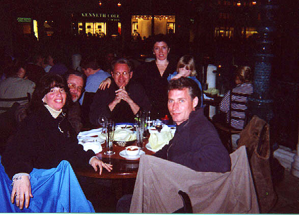 |
| Monday, the actual holiday itself, found us reassembling in our various clusters, at the Las Vegas airport. Despite a little anxiety about the wayward set of alternate jersies, our spirits were good, and the final toasts to the 2000 Tournament in Las Vegas were consumed at the ubiquitous Cheers outlet in the airport concourse. | 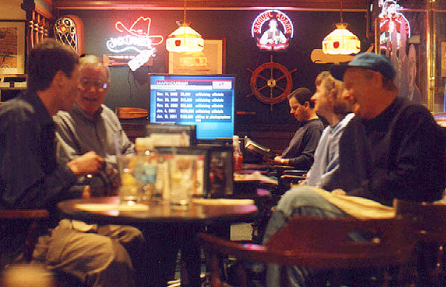 |
| This recounting of the events and personages at the King Cup 2001 representing Old Nicks is, sadly, only a quick sketch when an entire oil painting is needed to do it justice. Perhaps further tales of the journey will be submitted by the participants- and posted herein- with the goal of truly recounting what was a great adventure. |